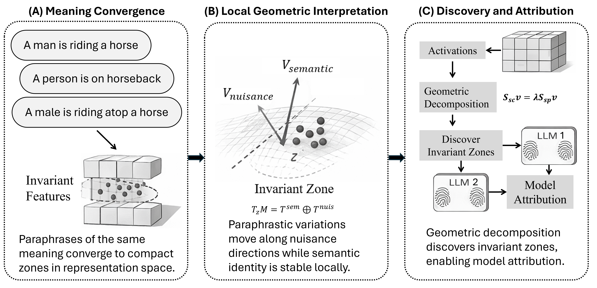

Language models exhibit strong robustness to paraphrasing, suggesting that semantic information may be encoded through stable internal representations, yet the structure and origin of such invariance remain unclear. We propose a local geometric framework in which semantically equivalent inputs occupy structured regions in latent space, with paraphrastic variation along nuisance directions and semantic identity preserved in invariant subspaces. Building on this view, we make three contributions: (1) a geometric characterization of invariant latent features, (2) a contrastive subspace discovery method that separates semantic-changing from semantic-preserving variation, and (3) an application of invariant representations to zero-shot model attribution. Across models and layers, empirical results support these contributions. Invariant structure emerges in specific depth regions, semantic displacement lies largely outside the nuisance subspace, and representation-level interventions indicate a causal role of invariant components in model outputs. Invariant representations also capture model-specific geometric patterns, enabling accurate attribution. These findings suggest that semantic invariance can be viewed as a local geometric property of latent representations, offering a principled perspective on how language models organize meaning.